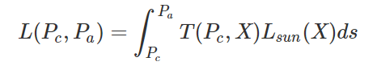
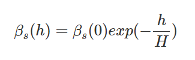
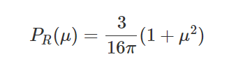
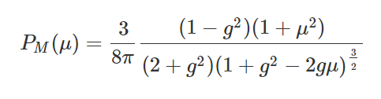

Terrance Wang, Lara Chu, Brandon Choy, Roland Li
Link to Slides Link to VideoFor our CS184 final project, we implemented a Minecraft shader complete with more realistic skies and water animation. In Minecraft, the default skies and water lack dimensionality, realistic coloring and light scattering, and possess a simple cartoon style animation. We researched various models for atmospheric scattering and fractional brownian motion. In the end, we learned about the OpenGL rendering pipeline and how it interacts with Minecraft, implemented Rayleigh and Mie scattering to recreate the Nishita atmosphere model and fractional brownian motion to animate the water, and applied a few optimizations to improve real time rendering.
For our implementation of realistic skies, we researched atmospheric scattering. Atmospheric scattering is a natural phenomenon that occurs when photons interact with atmospheric particles (atmospheric gases composed of oxygen, nitrogen, argon, water, etc. and aerosols such as pollution) and it results in the photons being deflected and scattering light in various directions. The amount of scattering depends on the density of the atmosphere which decreases exponentially with height. Our algorithm is based on ray marching and accumulating the scattered light by calculating the atmospheric density along evenly spaced sample points across the primary viewing ray.
Atmospheric scattering mostly comprises two different types of scattering - Rayleigh and Mie scattering. Rayleigh scattering is caused by photons scattering from air molecules and Mie scattering is caused by photons scattering from aerosol particles. Rayleigh scattering is dependent on the light wavelength and it scatters blue light more than any other color (the shortest light wavelength). It is responsible for producing the blue color of the sky humans perceive and the red/orange colors at sunsets. Meanwhile, Mie scattering is wavelength independent and is the primary cause of haze.
To calculate the scattering contributions, we used the following equation:
Where Pc was the position of the camera, Pa was the position of the point of interest, T(Pc, X) was the optical depth between camera position and X (a sampled position along the primary viewing ray) and Lsun was the amount of scattering from the sun. It’s impossible to analytically solve this integral and so we implemented numerical integration taking a certain number of samples along a ray and ray marching a certain step size. In order to calculate the T(Pc, X), the optical depth along the primary viewing ray (ray cast from camera position to point of interest in the atmosphere), we first calculated the intersection point between the ray cast from the camera with the atmosphere. We used Earth’s radius and atmospheric radius (6372km for radius and 6472km for atmosphere radius) to conduct the ray sphere intersection. Then, we marched forward ‘view_ray_steps’ times from the camera position and found sample position X. For each sample, we calculated the optical depth for Rayleigh and Mie scattering with the following equation:
Where h was the height of the sample position and H was the scale height (approximation of thickness of the atmosphere if there was a uniform density). We used an H_rayleigh of around 8km and an H_mie of around 1.2km. We multiplied the exponential with the sample step size as ds and aggregated the optical depths. Additionally, for each sample along the viewing ray we had to calculate Lsun which accounts for the attenuation the light will experience traveling through the atmosphere. In order to calculate Lsun, we ray march along the ray from the sampled position to the sun position and numerically integrate ‘light_ray_steps’ samples along the light ray. We calculate the optical depth along the light ray with the same equation above and scale heights. Then we calculate the attenuation for the viewing ray sample scaled with the Rayleigh and Mie scattering coefficients and sum them up to calculate total scattering. The total Rayleigh scattering is then scaled by the Rayleigh scattering coefficient (For Earth it is estimated to be 5.5e-6m^-1, 13.0e-6m^-1, and 22.4e-6m^-1 for 680nm wavelength (red), 550nm wavelength (green), and 440nm (blue) respectively) and the Rayleigh phase function:
Where Mu is the cosine of the angle between the sun direction and camera direction. The total Mie scattering is then scaled by the Mie scattering coefficient (estimated for Earth as 21e-6m^-1) and the Mie phase function as calculated:
Where g is 0.76 as used in the Nishita models, and Mu is the cosine of the angle between the sun direction and the camera direction. Then the two scaled Rayleigh and Mie scatterings are summed together and multiplied by a sun intensity constant which we estimated with 40.
In order to save computation time, we precomputed the phase functions and minimized the number of calls for exponentials and products we needed to calculate. Additionally, we minimized the number of samples we took along the light rays and along the viewing ray and in the end settled for taking 32 samples along the viewing ray and 4 samples along the light rays. Some problems we encountered were determining the correct positioning and finding the uniform attributes we needed and converting them to the right coordinate spaces. We solved the problems by researching Optifine documentation and utilizing the ShaderLabs discord to help with understanding the various conversion matrices and calculations.
For our implementation of water, we used a technique called fractional Brownian motion (fBm) to simulate random waves travelling across the surface of the water. One thing we thought the original Minecraft water texture lacked was a sense of depth and motion, and we tried to add these aspects with our wave texture. For this part, we referred to the book of shaders website and their tutorial on fBm. Specifically, their technique on using the outputs of fBm as the inputs to another fBm function ended up being very similar to the wave effect we wanted to achieve with our water.
fBm works by successively adding perlin noise functions with increasing frequency and decreasing amplitude. This way, later additions of noise functions will add finer details to our final fBm function. We generate our perlin noise function by generating a pseudo-random value for four corners around our input coordinate. Then, we use the ease curve to calculate the interpolation weights of each corner. Finally, we interpolate between the pseudo-random vectors to get a final value for our output. The perlin noise is spatially consistent because of the pseudo-random vectors and the interpolation. The random value we get for each corner is the same each time, so our noise function smoothly transitions from one point to the next.
To add depth to our water, we attempted to implement normal mapping. Normal mapping is a technique that alters the normal of a surface by changing the normal of each fragment of the surface. To make this change, we needed a height map to represent the changes in depth of the water. We decided to use fBm as this would easily create this random motion for us. For an input texture coordinate, we found the fBm for a coordinate slightly to the left and subtracted the fBm of the original coordinate. We scaled this value and set the new normal’s x value to this number. We did this again for a coordinate slightly up and set the normal’s y value to this number. After doing so, we had a normal in texture space, which we needed to convert to model space. Since we knew the surface normal, it was easy to calculate the tangent and bitangent required to create the TBN matrix. Multiplying the TBN matrix and our normal in object space output a normal in model space. The remaining problem we had was applying this to the normals themselves in Minecraft. We couldn’t figure out how to utilize gl_FragData to actually apply the normal mapping to the normals. We also attempted to utilize screen space reflections by referencing this website, but had many difficulties with conversions between different spaces.
From what we learned in this class, we thought this project would be a path tracing project. However, since Minecraft is a rasterized game, it does not support ray tracing and other techniques must be used to create similar effects. Some of these techniques are atmospheric scattering, fractional Brownian motion, normal mapping, etc. Just by working on only two parts of the Minecraft environment, we learned about many different mathematical models that could be used to create similar effects to ray tracing. We now have a lot more respect for Minecraft shader developers, as they obviously do a lot of research to make every part of Minecraft look realistic. It also took some time to learn about the OpenGL rendering pipeline and how it interacted with Minecraft and Optifine.
Simulating the Colors of the Sky
ShaderLabs Discord
Roland Li - Pair programmed with Terrance to implement water animation. Arranged team meeting times and scheduled calls. Researched how to add normal mapping to minecraft. Looked at shadertoy examples for guidance. Researched SSR for reflections, wrote normal mapping function and reflection function.
Terrance Wang - Pair programmed with Roland to implement water animation. Captured demo videos and images for writeup / presentations. Researched SSR for reflections. Debugged the water animation and converted shadertoy implementation to minecraft, tuned animation parameters.
Brandon Choy - Worked with Lara to set up the shader pipeline for Minecraft. Pair programmed to implement atmospheric scattering. Researched and figured out basic Minecraft shading capabilities. Helped convert ShaderToy implementation to Minecraft.
Lara Chu - Worked with Brandon to set up the shader pipeline for Minecraft. Pair programmed to atmospheric scattering. Researched and figured out Rayleigh and Mie scattering on ShaderToy. Helped convert ShaderToy to Minecraft. Set up writeup templates and created slide decks.